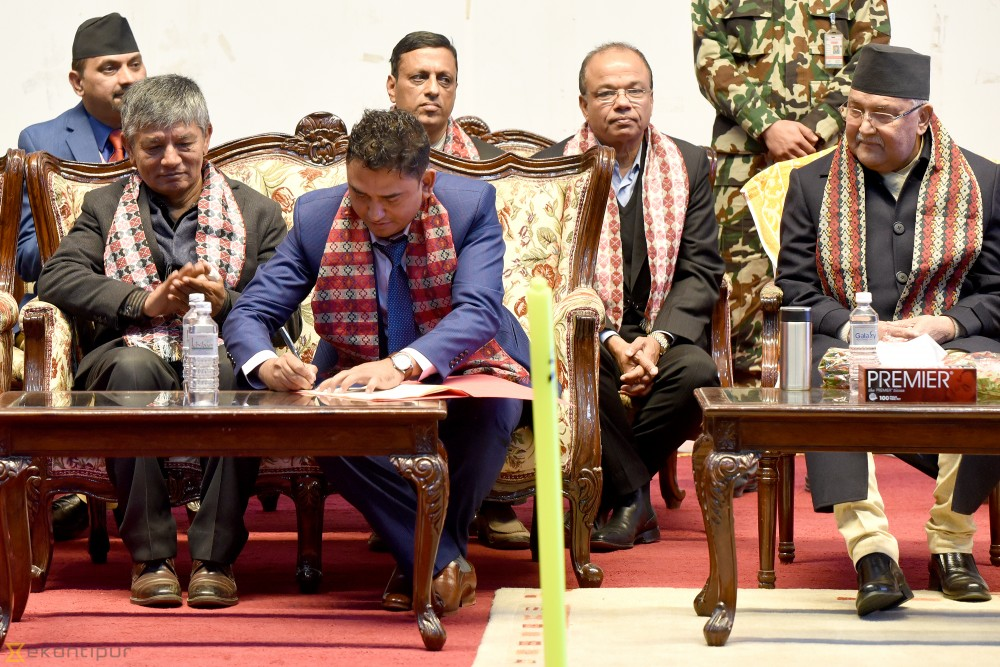

Jan 31, 2019-Dhurmus-Suntali Foundation led by comedians Sitaram Kattel and Kunjana Ghimire on Wednesday announced plans to construction a multi-purpose Gautam Buddha International Cricket Stadium in Chitwan.The Foundation signed the memorandum of understanding (MoU) with Bharatpur Metropolitan City in Kathmandu on Wednesday which paves way for the construction of the proposed stadium. The Foundation President Kattel, popularly known as Dhurmus, and Bharatpur Metropolitan Mayor Renu Dahal exchanged the MoU. The proposed stadium will to constructed in 20 bigha and six kattha of land at the Forestry University premises in Bharatpur. Upon the completion, the stadium will be handed over to the Bharatpur Metropolitan City.The foundation, which has won hearts on many Nepalis home and abroad by construction of four different integrated modular settlements after the great earthquake of April 2012 through donations, made the announcement of the ambitious projects in the presence of high-level government officials including Prime Minister Khadga Prasad Sharma Oli.The Foundation plans to construct the stadium solely through fund generated from donations. Unsurprisingly, the Foundation raised over Rs 40 million alone on Wednesday while announcing the project at the jam-packed Nepal Academy Hall. The Foundation roughly estimates the costs of the stadium at around Rs 3 billion.According to Kattel the Detailed Project Report (DPR) of the stadium will be finalised in next six months and the construction work will finish in two years. “We will be declaring the handing over date on the day the foundation stone for the stadium will be laid. The construction work will finish within two years,” said Kattel.Read: Dhurmus-Suntali Foundation to construct int’l cricket stadium As per the short documentary presented during the announcement ceremony, the stadium will have the capacity to accommodate 25,000 spectators. Besides the main ground, the stadium will have two practice pitches. Besides cricket grounds, it will also have football ground, volleyball ground, basketball court, taekwondo hall, table tennis court, dandi-biyo play grounds among others. The stadium will have the ‘Stupa design’. “The stadium design will provide a traditional flavour,” said Kattel who also urged all Nepali citizens to accept the project as their own rather than of the foundation. He appealed every Nepali at home and abroad to support the project financially, promising the fund received will not be misused. Bharatpur Mayor Dahal promised to leave no stone unturned to make the project a success. “Involvement of government alone is not possible to make the big projects successful. The involvement of private sector and citizens are equally important. To celebrate the historic announcement there will be light illumination tonight in Chitwan,” said Dahal. Prime Minister Oli said he was ready to support the construction of the stadium in any way possible adding that the existing facilities of cricket were not of high standard. “Our cricket facilities at Gokarna and Kirtipur are not that good. With the construction of the new stadium, it will give us new recognition at international level,” he said. CPN co-chairman Dahal said that sports have become one of the key indicators of progress and prosperity of a country. “Sports has changed these days and it plays key role in uplifting economy, prosperity of the country and national identity,” said Dahal who is the member of house of representatives from Chitwan district. National cricket team captain Paras Khadka and star leg-spinner Sandeep Lamichhane, currently in United Arab Emirates for a bilateral series, sent video messages to the Foundation wishing success of the project. The Foundation had announced plans to construct the International standard cricket stadium when Nepal earned the coveted One-Day International status in June last year.
Dhurmus-Suntali take reins in constructing cricket stadium
Jan 31, 2019-Dhurmus-Suntali Foundation led by comedians Sitaram Kattel and Kunjana Ghimire on Wednesday announced plans to construction a multi-purpose Gautam Buddha International Cricket Stadium in Chitwan.The Foundation signed the memorandum of understanding (MoU) with Bharatpur Metropolitan City in Kathmandu on Wednesday which paves way for the construction of the proposed stadium. The Foundation President Kattel, popularly known as Dhurmus, and Bharatpur Metropolitan Mayor Renu Dahal exchanged the MoU. The proposed stadium will to constructed in 20 bigha and six kattha of land at the Forestry University premises in Bharatpur. Upon the completion, the stadium will be handed over to the Bharatpur Metropolitan City.The foundation, which has won hearts on many Nepalis home and abroad by construction of four different integrated modular settlements after the great earthquake of April 2012 through donations, made the announcement of the ambitious projects in the presence of high-level government officials including Prime Minister Khadga Prasad Sharma Oli.The Foundation plans to construct the stadium solely through fund generated from donations. Unsurprisingly, the Foundation raised over Rs 40 million alone on Wednesday while announcing the project at the jam-packed Nepal Academy Hall. The Foundation roughly estimates the costs of the stadium at around Rs 3 billion.According to Kattel the Detailed Project Report (DPR) of the stadium will be finalised in next six months and the construction work will finish in two years. “We will be declaring the handing over date on the day the foundation stone for the stadium will be laid. The construction work will finish within two years,” said Kattel.Read: Dhurmus-Suntali Foundation to construct int’l cricket stadium As per the short documentary presented during the announcement ceremony, the stadium will have the capacity to accommodate 25,000 spectators. Besides the main ground, the stadium will have two practice pitches. Besides cricket grounds, it will also have football ground, volleyball ground, basketball court, taekwondo hall, table tennis court, dandi-biyo play grounds among others. The stadium will have the ‘Stupa design’. “The stadium design will provide a traditional flavour,” said Kattel who also urged all Nepali citizens to accept the project as their own rather than of the foundation. He appealed every Nepali at home and abroad to support the project financially, promising the fund received will not be misused. Bharatpur Mayor Dahal promised to leave no stone unturned to make the project a success. “Involvement of government alone is not possible to make the big projects successful. The involvement of private sector and citizens are equally important. To celebrate the historic announcement there will be light illumination tonight in Chitwan,” said Dahal. Prime Minister Oli said he was ready to support the construction of the stadium in any way possible adding that the existing facilities of cricket were not of high standard. “Our cricket facilities at Gokarna and Kirtipur are not that good. With the construction of the new stadium, it will give us new recognition at international level,” he said. CPN co-chairman Dahal said that sports have become one of the key indicators of progress and prosperity of a country. “Sports has changed these days and it plays key role in uplifting economy, prosperity of the country and national identity,” said Dahal who is the member of house of representatives from Chitwan district. National cricket team captain Paras Khadka and star leg-spinner Sandeep Lamichhane, currently in United Arab Emirates for a bilateral series, sent video messages to the Foundation wishing success of the project. The Foundation had announced plans to construct the International standard cricket stadium when Nepal earned the coveted One-Day International status in June last year.